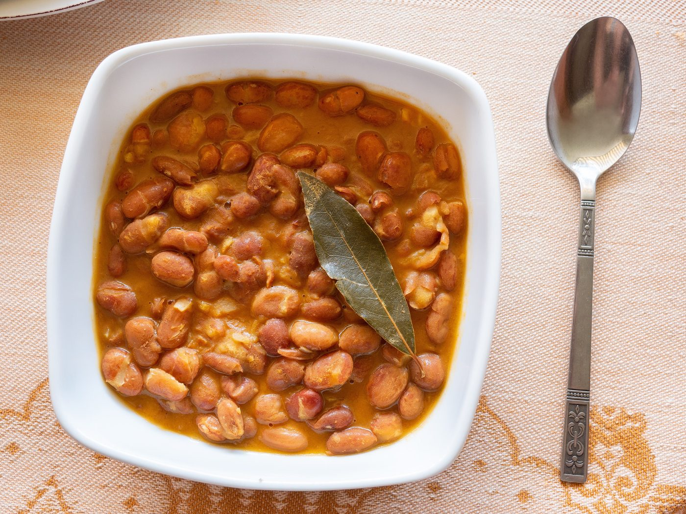
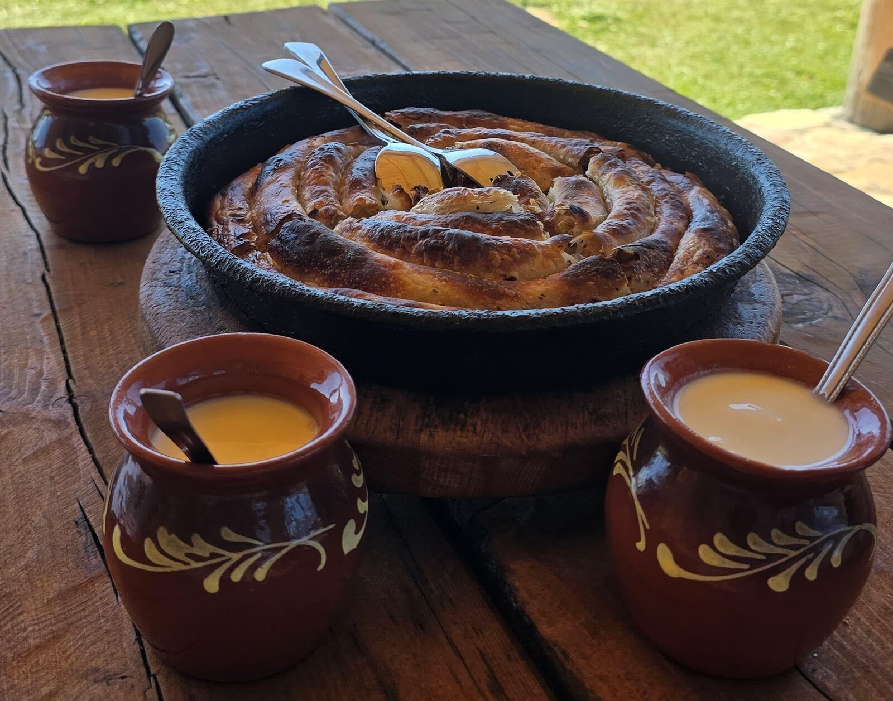

GoatConf 2027
A free conference for people who build and sell software. Engineers, designers, product people, founders, and the incurably curious dreamers and visionaries. Any programming language, any stack.
An excuse to hang out with like-minded people and learn from folks sharing their current best. In Tuzla, Bosnia and Herzegovina, 3–5 June 2027.
Two days of one-hour sessions in every room, with a full hour off after each. Then a day at the lakes. The people who come add the rest.
What is decided


Three days in June
- 7Thursday 3rd June10:00 to 17:00Four one-hour slots in every room, an hour off after each. Welcome at 09:45.
- 8Friday 4th June09:30 to 16:30Four slots, starting half an hour earlier than Thursday. Welcome at 09:15.
- 9Saturday 5th JuneThe community's dayA day at the lakes and the goat hunt, planned by the organiser, plus walks and meetups people add.
Who's organising
GoatConf is organised by Muhamed Isabegović, who founded and organised EuRuKo 2024, the first Ruby conference in Bosnia and Herzegovina, and RubyConf Austria. GoatConf itself is not about Ruby or any one stack.
IPI Academy in Tuzla is the host and partner, and gives GoatConf its rooms. The first edition expects 120 to 300 people.
- 120 to 300people expected
- 7rooms at IPI Academy, all at once
- 2conferences organised before
- 62speakers hosted at EuRuKo 2024 and RubyConf Austria
Conferences run before
-
 EuRuKo 2024 Sarajevo, 11 to 13 September 2024
EuRuKo 2024 Sarajevo, 11 to 13 September 2024The first Ruby conference in Bosnia and Herzegovina. Speakers included Yukihiro "Matz" Matsumoto, José Valim, Dave Thomas, Xavier Noria, Koichi Sasada, Jean Boussier and Obie Fernandez.
2024.euruko.org -
 RubyConf Austria 2026 Vienna, 29 and 30 May 2026
RubyConf Austria 2026 Vienna, 29 and 30 May 2026Two days at Haus der Musik and Das MuTh. Speakers included Chad Fowler, Dave Thomas, Obie Fernandez, Charles Oliver Nutter, Bozhidar Batsov and Andrzej Krzywda, with José Valim and Armin Ronacher on a panel.
rubyconf.at


These were past conferences, not GoatConf's program. Photos from RubyConf Austria 2026 by Alessandro Bruckheimer.
Who is speaking
Give a talk
The call is open, with no strict deadline. First-time speakers are welcome, from any field: engineering, design, product, founding a company.
Sessions are picked for their quality, never for who is paying. Speakers pay their own travel. If the budget allows, the organiser may refund some of it, but this is not promised.
How to propose a talk
- Send your idea through the short form.
- The organiser reads your session first, your name after.
- You hear back, whatever the answer, with no fixed reply time.
- Your session goes on the program.
Tuzla, the host town
The talks are in English, at IPI Academy, Kulina bana 2, in the centre of Tuzla. Coffee and lunch are in the cafés on Freedom Square, under five minutes' walk away. The old town, the Korzo and the lakes are all a short walk from there.
Tuzla is named for salt: tuz is Turkish for salt. People have made salt here since the Neolithic, and next to the lakes a park rebuilds the village they lived in on stilts, thousands of years ago.
The goat on GoatConf's seal is Tuzla's too. The story goes that when goats were banned, one family hid a goat, and it fed the whole city with its milk and cheese. The goat is still a city symbol.
The Pannonian Lakes are three salt lakes in the middle of town, with salt waterfalls and a beach. The season opens on 1 June, and many people go around 17:00 or 18:00, so the lakes fit after each day's talks. A small train runs there from Freedom Square.
Tuzla International Airport is about 13 km from town, with Wizz Air flights from across Europe. From Sarajevo, the bus takes about three hours.
Getting here, staying and money
What things cost in town
- A simple meal4.60 €
- A cappuccino1.66 €
- A lake ticket, weekdays3.60 €
- A lake ticket, weekends4.60 €
Meal and cappuccino: Numbeo, 2 October 2026. Lake tickets: adults, summer 2026.


Eat and drink, with or without meat
Bosnian food is meat-heavy, and it is good. There is plenty without meat too: most of the dishes below have none. The organiser pays for no food or drink: you buy your own, or a supporter treats everyone at a café.
The travel page maps places near IPI with vegetarian dishes on their menus: pizzerias, one that also sells krompiruša and zeljanica, and a Bosnian restaurant with a vegetarian platter. None is fully vegetarian or vegan, so ask each place.
Ask for posno: it means made without meat, and often without eggs or dairy too, so check if you are vegan.






Prices are what a portion costs in Tuzla, from menus on the Korpa.ba delivery app and Bosnian news reports, checked on 13 October 2026. Coffee prices are from Sarajevo.
Propose an event
Anyone can propose an event, like a meetup, a hackathon or a dinner. You run it and pay for it. If the organiser accepts it, it becomes part of GoatConf 2027 and is shared with everyone who comes. It follows the charter and the code of conduct.
- 34Evening eventYours?
- 35Community tripYours?
- 36MeetupYours?
- 37Live podcastYours?
- 38HikeYours?
- 39HackathonYours?
- 40KaraokeYours?
- 41Something else?Yours?
Support GoatConf
GoatConf is free to attend. Companies help keep it that way by supporting it online: a logo and link on the site, one social post and a mention in the emails to everyone registered. The money pays the event's costs. Supporters never buy talks, stage time or the attendee list.
- 500 €one level, the same for everyone
- Onlineno booth, nothing at the venue

Why a goat
When Austria-Hungary ruled Tuzla, it ordered every goat gone. One man hid his. Word got around, and soon the whole town was buying milk and cheese from that one goat.
That goat is GoatConf's mark: the one that feeds the community. It first appeared as the mascot of EuRuKo 2024, the first Ruby conference in Bosnia and Herzegovina. GoatConf itself is not about Ruby or any one stack.
Saturday has a slot for a goat hunt through town: clues, teams of people who just met, and the goat statue at the end. Whoever runs it gets the slot.
How we treat each other
GoatConf uses RubyConf Austria's code of conduct. The code of conduct team is the organiser, Muhamed Isabegović, and a member of staff at IPI Academy.
Talk to either of them at the event. Or use the contact form: the organiser reads it, and brings in the IPI staff member only if you agree. Reports are confidential.